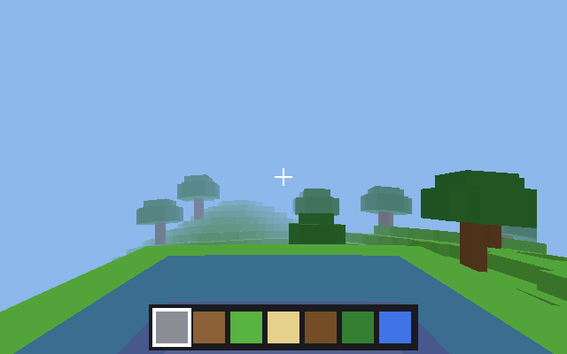
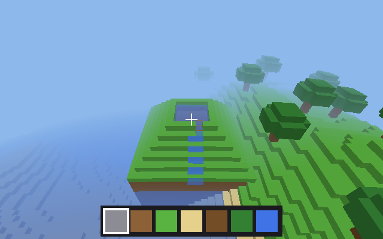
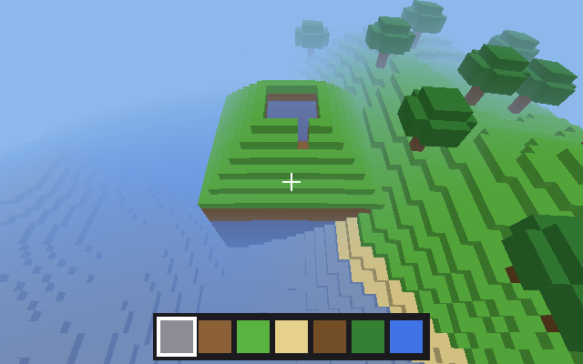

Water that drains
a lake on a voxel hill, emptied a layer at a time, by moving cups of water
Table of Contents
In the endless voxel world of X_eTaL's extensions a stepped hill holds
a lake on its top terrace. Dig into the rim and the lake runs out as a
thin stream down one face of the hill, its level falling a block at a
time, until it reaches the bottom of the breach; dig the trench deeper
and the next layer goes. The water is a cellular automaton written in
X_eTaL, and it never makes or loses water. This document builds its
rules up from a row of five cups, then shows the code that runs them in
the game: extensions/scene/demos/Endless.xtl (its "Moving water"
section) and the demo extensions/scene/demos/voxels-water.xtl. A
shorter account is docs/voxel-water.md.

Cups of water
A cell of moving water is a cup holding up to 64 spoonfuls: 64 is a full block, 32 half of one. Water is moved from cup to cup and never made, so the spoonfuls can be counted at any time and the count only changes at the sea. The game keeps every cup in one array, a row each: x y z, the amount, and the direction it last moved.
ˡfull ← 64 ⍝ typed: ⍝ l:full := 64
ˡw̲ater ← { (_, (_, _, _, _, _, _, W, _), _, _) → W } ⍝ typed: ⍝ l:w_ater := { (_, (_, _, _, _, _, _, W, _), _, _) -> W }
A row of five cups
The rules are easiest to see in one dimension. Five cups in a row, the first one full:
row ← 64 0 0 0 0 row ⍝ typed: ⍝ row := 64 0 0 0 0 ⍝ row
64 0 0 0 0
Spreading is done in passes, one a direction. In a pass east, each cup gives part of the difference to the cup east of it when that cup holds less; the last cup has no one to give to. The part is half the difference, and why it is no more than half comes next.
ᵘe̲ast ← { a → t ← 0 m̲ax ((a − 1 d̲rop a c̲at 0) d̲iv 2) × (r̲ange t̲ally a) < t̲ally a (a − t) + 0 c̲at -1 d̲rop t } ᵘw̲est ← { a → t ← 0 m̲ax ((a − 0 c̲at -1 d̲rop a) d̲iv 2) × (r̲ange t̲ally a) > 1 (a − t) + 1 d̲rop t c̲at 0 } ᵘt̲ick ← { a → ᵘe̲ast ᵘw̲est a } ᵘt̲ick row ⍝ typed: ⍝ u:e_ast := { a -> ⍝ t := 0 m_ax ((a - 1 d_rop a c_at 0) d_iv 2) * (r_ange t_ally a) < t_ally a ⍝ (a - t) + 0 c_at -1 d_rop t ⍝ } ⍝ u:w_est := { a -> ⍝ t := 0 m_ax ((a - 0 c_at -1 d_rop a) d_iv 2) * (r_ange t_ally a) > 1 ⍝ (a - t) + 1 d_rop t c_at 0 ⍝ } ⍝ u:t_ick := { a -> u:e_ast u:w_est a } ⍝ u:t_ick row
32 32 0 0 0
A tick is a pass west then a pass east. Six ticks, each row printed, and the water counted at the end:
ᵘs̲how ← { n a → said ← p̲rint! f̲ormat a n = 0 ? a (n − 1) ᵘs̲how ᵘt̲ick a } z ← 6 ᵘs̲how row '+ r̲/ z ⍝ typed: ⍝ u:s_how := { n a -> ⍝ said := p_rint! f_ormat a ⍝ n = 0 ? a ⍝ (n - 1) u:s_how u:t_ick a ⍝ } ⍝ z := 6 u:s_how row ⍝ '+ r_/ z
64 0 0 0 0 32 32 0 0 0 32 16 16 0 0 24 24 8 8 0 24 16 16 4 4 20 20 10 10 4 20 15 15 7 7 64
The water spreads out and evens, and all 64 spoonfuls are still there.
Why only half
The first version gave the whole difference. Two cups, 0 and 64: the pass west moves all 64 into the first cup, the pass east moves them all back – every tick ends where it began. The game saw that nothing had changed and put the water to sleep, the lake still full. Here is that rule, a pass west, then a tick, then two ticks:
ᵘe̲astAll ← { a → t ← 0 m̲ax (a − 1 d̲rop a c̲at 0) × (r̲ange t̲ally a) < t̲ally a (a − t) + 0 c̲at -1 d̲rop t } ᵘw̲estAll ← { a → t ← 0 m̲ax (a − 0 c̲at -1 d̲rop a) × (r̲ange t̲ally a) > 1 (a − t) + 1 d̲rop t c̲at 0 } pair ← 0 64 said ← p̲rint! f̲ormat ᵘw̲estAll pair said ← p̲rint! f̲ormat ᵘe̲astAll ᵘw̲estAll pair ᵘe̲astAll ᵘw̲estAll ᵘe̲astAll ᵘw̲estAll pair ⍝ typed: ⍝ u:e_astAll := { a -> ⍝ t := 0 m_ax (a - 1 d_rop a c_at 0) * (r_ange t_ally a) < t_ally a ⍝ (a - t) + 0 c_at -1 d_rop t ⍝ } ⍝ u:w_estAll := { a -> ⍝ t := 0 m_ax (a - 0 c_at -1 d_rop a) * (r_ange t_ally a) > 1 ⍝ (a - t) + 1 d_rop t c_at 0 ⍝ } ⍝ pair := 0 64 ⍝ said := p_rint! f_ormat u:w_estAll pair ⍝ said := p_rint! f_ormat u:e_astAll u:w_estAll pair ⍝ u:e_astAll u:w_estAll u:e_astAll u:w_estAll pair
64 0 0 64 0 64
With half the difference two cups meet in the middle and stay there.
Gravity first
In the game a tick starts with gravity. Each cup pours down into what is below it: into air or a cup with room, as much as fits; onto rock, nothing; into the sea, all of it, and that water is now sea. Only then does water spread.
ʰf̲all ← { wo (P, A, D) → n ← t̲ally A keys ← ʰc̲ellKey P dn ← P ʰs̲hift 0 -1 0 kd ← wo ˡl̲ook dn jd ← keys i̲ndexOf ʰc̲ellKey dn bd ← jd s̲elect A c̲at 0 room ← (kd = 0) × ˡfull − bd f ← ((kd = 2) × A) + (kd ≠ 2) × A m̲in room ja ← keys i̲ndexOf ʰc̲ellKey P ʰs̲hift 0 1 0 A ← (A − f) + (ja s̲elect f c̲at 0) × ja ≤ n new ← (f > 0) × (kd = 0) × jd > n m ← '+ r̲/ new (P c̲at new r̲eplicate dn, A c̲at new r̲eplicate f, D c̲at new r̲eplicate D) } ⍝ typed: ⍝ h:f_all := { wo (P, A, D) -> ⍝ n := t_ally A ⍝ keys := h:c_ellKey P ⍝ dn := P h:s_hift 0 -1 0 ⍝ kd := wo l:l_ook dn ⍝ jd := keys i_ndexOf h:c_ellKey dn ⍝ bd := jd s_elect A c_at 0 ⍝ room := (kd = 0) * l:full - bd ⍝ f := ((kd = 2) * A) + (kd != 2) * A m_in room ⍝ ja := keys i_ndexOf h:c_ellKey P h:s_hift 0 1 0 ⍝ A := (A - f) + (ja s_elect f c_at 0) * ja <= n ⍝ new := (f > 0) * (kd = 0) * jd > n ⍝ m := '+ r_/ new ⍝ (P c_at new r_eplicate dn, A c_at new r_eplicate f, D c_at new r_eplicate D) ⍝ }
Spreading, with momentum and edges
Then the four passes, west, east, north, south. A cup spreads only when
it cannot fall: rock, or a full cup, is under it (held). It gives
only to a neighbor holding less (go). Its share of the difference is
4/16, more the way it is already moving – momentum, 7/16, which is
why a stream keeps going straight down a narrow trench – and the most
toward a neighbor with a drop under it, 8/16, so water pours off an
edge. Never more than half; at least one spoonful when the difference
is two or more; and the front of a stream moves on into an empty cell
even by one, so a lake drains all the way instead of resting on a
gentle slope.
ʰs̲pread ← { woo (P, A, D) → (wo, o) ← woo n ← t̲ally A off ← (1 s̲elect o) c̲at 0 c̲at 2 s̲elect o keys ← ʰc̲ellKey P side ← P ʰs̲hift off ks ← wo ˡl̲ook side js ← keys i̲ndexOf ʰc̲ellKey side bs ← js s̲elect A c̲at 0 dn ← P ʰs̲hift 0 -1 0 jd ← keys i̲ndexOf ʰc̲ellKey dn held ← ((wo ˡl̲ook dn) = 1) + ˡfull = jd s̲elect A c̲at 0 drop ← 0 = wo ˡl̲ook side ʰs̲hift 0 -1 0 ahead ← ((1 s̲elect₂ D) = 1 s̲elect o) × (2 s̲elect₂ D) = 2 s̲elect o wt ← 4 m̲ax (7 × ahead) m̲ax 8 × drop go ← (ks = 0) × (0 < held) × A > bs ⍝ at most half the difference: neighbors even out, never trade places t ← go × ((A − bs) × wt) d̲iv 16 ⍝ a stream's front keeps going the way it moves, and over an edge, ⍝ even by 1 (only into an empty cell, so water cannot circle) t ← t m̲ax go × ((A − bs) ≥ 2) + (bs = 0) × 0 < ahead + drop t ← t m̲in (ˡfull − bs) m̲in A jf ← keys i̲ndexOf ʰc̲ellKey P ʰs̲hift 0 − off got ← (jf s̲elect t c̲at 0) × jf ≤ n A ← (A − t) + got dx ← ((got > 0) × 1 s̲elect o) + (got = 0) × 1 s̲elect₂ D dz ← ((got > 0) × 2 s̲elect o) + (got = 0) × 2 s̲elect₂ D D ← 2 1 t̲ranspose (2 c̲at n) r̲eshape dx c̲at dz new ← (t > 0) × js > n m ← '+ r̲/ new (P c̲at new r̲eplicate side, A c̲at new r̲eplicate t, D c̲at (m c̲at 2) r̲eshape o) } ⍝ typed: ⍝ h:s_pread := { woo (P, A, D) -> ⍝ (wo, o) := woo ⍝ n := t_ally A ⍝ off := (1 s_elect o) c_at 0 c_at 2 s_elect o ⍝ keys := h:c_ellKey P ⍝ side := P h:s_hift off ⍝ ks := wo l:l_ook side ⍝ js := keys i_ndexOf h:c_ellKey side ⍝ bs := js s_elect A c_at 0 ⍝ dn := P h:s_hift 0 -1 0 ⍝ jd := keys i_ndexOf h:c_ellKey dn ⍝ held := ((wo l:l_ook dn) = 1) + l:full = jd s_elect A c_at 0 ⍝ drop := 0 = wo l:l_ook side h:s_hift 0 -1 0 ⍝ ahead := ((1 s_elect_2 D) = 1 s_elect o) * (2 s_elect_2 D) = 2 s_elect o ⍝ wt := 4 m_ax (7 * ahead) m_ax 8 * drop ⍝ go := (ks = 0) * (0 < held) * A > bs ⍝ t := go * ((A - bs) * wt) d_iv 16 ⍝ t := t m_ax go * ((A - bs) >= 2) + (bs = 0) * 0 < ahead + drop ⍝ t := t m_in (l:full - bs) m_in A ⍝ jf := keys i_ndexOf h:c_ellKey P h:s_hift 0 - off ⍝ got := (jf s_elect t c_at 0) * jf <= n ⍝ A := (A - t) + got ⍝ dx := ((got > 0) * 1 s_elect o) + (got = 0) * 1 s_elect_2 D ⍝ dz := ((got > 0) * 2 s_elect o) + (got = 0) * 2 s_elect_2 D ⍝ D := 2 1 t_ranspose (2 c_at n) r_eshape dx c_at dz ⍝ new := (t > 0) * js > n ⍝ m := '+ r_/ new ⍝ (P c_at new r_eplicate side, A c_at new r_eplicate t, D c_at (m c_at 2) r_eshape o) ⍝ }

The sea, and sleep
The sea is the one endless supply: it is made of ordinary blocks, not cups, and a cup beside it is kept full – so a hole dug next to the sea fills – while water falling into it becomes sea.
ʰr̲efill ← { wo W → P ← 1 2 3 s̲elect₂ W A ← 4 s̲elect₂ W D ← 5 6 s̲elect₂ W sides ← (P ʰs̲hift -1 0 0) c̲at (P ʰs̲hift 1 0 0) c̲at (P ʰs̲hift 0 0 -1) c̲at (P ʰs̲hift 0 0 1) c̲at P ʰs̲hift 0 1 0 sea ← 0 < '+ r̲/₁ (5 c̲at t̲ally A) r̲eshape 2 = wo ˡl̲ook sides (P, (ˡfull × sea) + (1 − sea) × A, D) } ⍝ typed: ⍝ h:r_efill := { wo W -> ⍝ P := 1 2 3 s_elect_2 W ⍝ A := 4 s_elect_2 W ⍝ D := 5 6 s_elect_2 W ⍝ sides := (P h:s_hift -1 0 0) c_at (P h:s_hift 1 0 0) c_at (P h:s_hift 0 0 -1) c_at (P h:s_hift 0 0 1) c_at P h:s_hift 0 1 0 ⍝ sea := 0 < '+ r_/_1 (5 c_at t_ally A) r_eshape 2 = wo l:l_ook sides ⍝ (P, (l:full * sea) + (1 - sea) * A, D) ⍝ }
A tick does the four steps in order and draws the water, see-through, each cup's top at its height. When a tick moves nothing the water sleeps until something changes: a block dug or placed, water poured, a column of the world made again.
ʰf̲low ← { s → (p, wo, jb, st) ← s (ks, ns, ms, wm, ed, rq, W, fw) ← wo (P, A, D) ← wo ʰr̲efill W (P, A, D) ← wo ʰf̲all (P, A, D) (P, A, D) ← (wo, -1 0) ʰs̲pread (P, A, D) (P, A, D) ← (wo, 1 0) ʰs̲pread (P, A, D) (P, A, D) ← (wo, 0 -1) ʰs̲pread (P, A, D) (P, A, D) ← (wo, 0 1) ʰs̲pread (P, A, D) live ← A > 0 n ← '+ r̲/ live W2 ← (live r̲eplicate P) c̲at₂ ((n c̲at 1) r̲eshape live r̲eplicate A) c̲at₂ live r̲eplicate D still ← W2 m̲atch W z ← (wo, W2) ʰd̲rawWater ˡw̲indow s (p, (ks, ns, ms, wm, ed, rq, W2, still ʰn̲ext 0), jb, st) } ⍝ typed: ⍝ h:f_low := { s -> ⍝ (p, wo, jb, st) := s ⍝ (ks, ns, ms, wm, ed, rq, W, fw) := wo ⍝ (P, A, D) := wo h:r_efill W ⍝ (P, A, D) := wo h:f_all (P, A, D) ⍝ (P, A, D) := (wo, -1 0) h:s_pread (P, A, D) ⍝ (P, A, D) := (wo, 1 0) h:s_pread (P, A, D) ⍝ (P, A, D) := (wo, 0 -1) h:s_pread (P, A, D) ⍝ (P, A, D) := (wo, 0 1) h:s_pread (P, A, D) ⍝ live := A > 0 ⍝ n := '+ r_/ live ⍝ W2 := (live r_eplicate P) c_at_2 ((n c_at 1) r_eshape live r_eplicate A) c_at_2 live r_eplicate D ⍝ still := W2 m_atch W ⍝ z := (wo, W2) h:d_rawWater l:w_indow s ⍝ (p, (ks, ns, ms, wm, ed, rq, W2, still h:n_ext 0), jb, st) ⍝ }
The lake, measured
The demo's lake is 25 cups a layer, two layers deep. Dig the rim: the
cups at the top layer's height flow out through the gap, every
spoonful that leaves is gone from the lake, and its level falls a layer
for every 25 blocks of water that leave. When the top layer is down to
a film nothing is above the breach's floor and the flow stops. Dig the
trench one block deeper and the layer below drains the same way. The
demo prints the lake each time the water comes to rest; these are the
numbers its test pins (scene-demo-voxels-water):
lake: top layer 25.0 of 25 blocks, the layer below 25.0 of 25; all the moving water 50.0 dug 9 22 11 lake: top layer 1.72 of 25 blocks, the layer below 25.0 of 25; all the moving water 26.72 dug 9 21 12 dug 9 21 11 lake: top layer 0.0 of 25 blocks, the layer below 2.11 of 25; all the moving water 2.13

The water that left ran down one face of the hill and into the sea. A second lesson came with the lake: with 8 spoonfuls a block a lake rested on a slope of one spoonful a cell (a difference of one never moves, or water would slosh forever) and kept a third of its top layer; with 64 a block, and a stream's front allowed to move by one, what stays behind is a sliver.